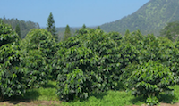
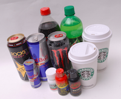

Effects
The effects of caffeine on the body are as follows:
- Dilation of the pupils;
- Increased heart rate;
- Increased respiration;
- Construction of blood vessels;
- Release of sugar from liver into the bloodstream.
Natural Occurrence

Around sixty plant species are known to contain caffeine. Common sources are the seed of the coffee plant (known as the bean), in the leaves of the tea bush; and in kola nuts. Other sources include yaupon holly leaves and the seeds from Amazonian maple guarana berries.
Caffeine in plants acts as a natural pesticide, paralysing and killing predatory insects feeding on the plant. High caffeine levels are found in coffee seedlings when they are developing foliage and lack mechanical protection. In addition, high caffeine levels are found in the surrounding soil of coffee seedlings.
Medical Concerns
Moderate amounts of daily caffeine (equivalent to approximately 3 cups of coffee) cause no harm in most healthy adults. However, some people are more vulnerable to its effects, such as people who have high blood pressure.
At high levels, caffeine may increase calcium and magnesium loss in urine, which can be linked to bone loss and osteoporosis. Although there is no proof of this, research does show a link between caffeine and risk of hip fracture in older adults.
An increase in heart rate and blood pressure is common in those who are sensitive to caffeine, but this has not been linked to higher cholesterol, irregular heartbeats or an increased risk of cardiovascular disease.
Studies have currently not found any link between cancer and caffeine. In fact, some research shows that caffeine may have a protective effect against certain cancers.
Caffeine is often cited as a reason why some women have trouble conceiving, but there is no proof of this. The reason pregnant women are advised to reduce their caffeine intact is generally due to a limited number of studies which found that women consuming high amounts of caffeine were at an increased risk for miscarriage.
Overdose
Consumption of 1 - 1.5 g per day is associated with a condition known as caffeinism. Caffeinism usually combines caffeine dependency with a wide range of unpleasant symptoms including nervousness, irritability, restlessness, insomnia, headaches, and palpitations after caffeine use.
Products

Common sources of caffeine are coffee, tea, soft and energy drinks and (to a lesser extent) chocolate which is derived from coffee beans. Protein bars also tend to contain caffeine. Guarana (a Brazilian plant) and yerba mate (South American herb) are used to make tea which is also a very popular in many countries. Drinks labelled “decaf” still contain caffeine, although in a significantly lower proportion than they normally would.
Even the cosmetics industry uses caffeine in their products! Eye creams containing caffeine have been found to reduce puffiness, and some shampoos claim to use caffeine to thicken hair and reduce hair loss.
Products containing caffeine include:
Consumption
According to statistics by the International Coffee Organisation (ICO), Finland tops the charts, grinding an impressive 12kg of coffee beans per person per year. The most popular coffees in Finland are very light roasts, much lighter than anywhere else in the world, and a decaf version is virtually non-existent. Finland’s neighbours Norway, Iceland and Denmark are not far behind in their coffee consumption levels.
If we look at coffee-producing nations, the numbers are very different. Brazil is the world’s largest exporter of coffee, shipping 5.7 billion pounds of coffee each year. In fact, Brazil has been the largest exporter of coffee for over 150 years, currently devoting over 2 million hectares of land to coffee farming. In the early 1920’s, Brazil used to supply 80% of the world’s coffee, but this figure has been reduced to a third at the present time. Vietnam takes second place on the exporter’s list, followed by Colombia, Indonesia and Ethiopia.
With regards to tea, Turkey tops the charts with almost 7 pounds of tea consumed annually per person. The biggest myth about tea is that tea contains more caffeine than coffee. While this is true when measuring coffee and tea in their dry forms, this claim is false when comparing brewed coffee and tea (which is what we actually drink)! The average person uses 2g of tea per cup, but would use 10g of coffee for the same quantity of water.
Top Coffee Drinkers:
- Finland
- Norway
- Iceland
- Denmark
- Netherlands
Top Tea Drinkers:
- Turkey
- Ireland
- United Kingdom
- Russia
- Morocco
Interesting Facts
Studies have shown that caffeine can help enhance the long term memory of bees; but spiders given caffeine produce highly irregular webs.
When you first wake up, your brain is flooded with cortisol (a natural chemical that helps to keep you alert). So although you might feel like a coffee, you don’t actually need one.
Caffeine is bundled into a number of prescription migraine medications and is a key ingredient in over-the counter analgesics like Excedrin and Anacin.